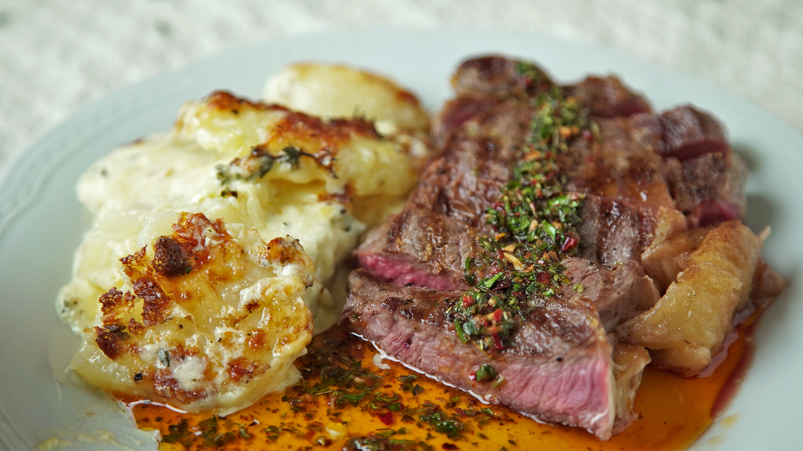

Bife de chorizo con papas
Ingredientes: Bife de chorizo, papas, sal, pimienta, aceite.
Ravioles de ricota con salsa bolognesa
Ingredientes: Ravioles de ricota, carne picada, tomate, cebolla, ajo, especias.
Milanesa napolitana con puré
Ingredientes: Carne, pan rallado, huevo, jamón, queso, salsa de tomate, papas.